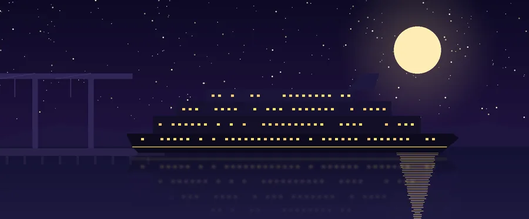

Cambodia News
Villa Vie Odyssey Stuck in Cambodia: What Happened to the “Endless Cruise” in Sihanoukville
On Monday 26 October 2026, the people who live on the Villa Vie Odyssey, a cruise ship where residents buy cabins as long-term homes, were told to leave the ship in Sihanoukville, Cambodia, by 2 p.m. that day. The company says it could not get the fuel it needed to keep sailing. This is what has been reported so far.

What happened in Sihanoukville
The Odyssey reached Sihanoukville from Thailand on Friday 23 October 2026. Cambodian provincial officials told reporters it arrived with 203 passengers and 156 crew, and that it was due to continue to Vietnam, according to RTÉ and the Associated Press.
On Monday 26 October, Villa Vie Residences chief executive Kathy Villalba posted a notice to residents on the ship's internal message board, Cruise Hive reported. It said the ship would go into a layup that afternoon, with the crew staying on board to look after the vessel, and that all residents had to be off the ship by 2 p.m. “Unfortunately, we were unable to secure the fuel necessary to continue operations,” the notice said.
Residents who could not take everything with them at once could arrange to come back for their belongings through Guest Services, and a shuttle for moving belongings ran only until Tuesday evening, according to Cruise Hive. On Tuesday 27 October the company announced that it had suspended operations in Cambodia.
Why the ship stopped: fuel costs
In its statement, Villa Vie said its fuel costs had risen from a historical average of about $1,800 per cabin per month to an estimated $6,000 to $8,000 per cabin in parts of Asia. AP and RTÉ linked the rise to the war involving Iran that began in late February 2026.
The company said it had slowed the itinerary and spent more time in port to burn less fuel, but that this was not enough. “Passing the full increase on to residents is not a realistic solution,” it said.
Founder Mikael Petterson gave more detail in an interview with CBS News, as reported by the cruise news site Pirates & Princesses: fuel that cost about $700 a ton before late February had risen to $2,000 to $3,000 a ton, and monthly expenses had grown from about $400,000 to $2 million. “We've borrowed money, we've stretched our payrolls as far as we can,” he said.
Residents describe months of strain before the stop. One resident, Holly Hennessey, told RTÉ that a fuel loan programme was offered in April and a fuel surcharge was charged in May, which she said only 37% of passengers paid. Cruise Industry News, citing people on board, reported, according to Newsweek, that residents had been asked several times for more money, including about $360,000 for fuel.
What happens to the residents
Many of the residents are retirees and remote workers, RTÉ reported, and AP said most are American. Some flew out of Cambodia; others stayed on in Sihanoukville, some of them in hotels.
Villa Vie said it was “working with residents to coordinate disembarkation and identify temporary living arrangements.” Reports differ on who is paying for that. Petterson was reported as saying the company is covering local hotels and transport but not flights out of Cambodia, while resident Randy Cassingham, who writes a blog about the voyage, told Cruise Industry News: “They have absolutely not offered to pay for that lodging, full stop.” Cassingham also said residents pooled cash so that junior crew members each received $100.
Villa Vie has not said publicly whether residents will get any money back. Residents paid large sums to live on board: cabins were advertised from about $120,000, and AP reported that a suite for the life of the ship started at around $230,000. Hennessey told RTÉ she has spent just under $500,000 since boarding in 2024, and that the money could be lost unless an investor saves the ship. She still called her two years at sea “magical.”
Looking back, Cassingham told Cruise Hive the end came from a combination of the business model, management mistakes and the fuel crisis: “it was a cascade of problems piling up on one another.”
What comes next
The company says it will work toward restructuring and new financing over the next 60 days, and warned that “no outcome is assured.” On 28 October, Petterson told CBS News that the company plans to file for Chapter 11 bankruptcy protection, Pirates & Princesses reported; no court filing had been reported at the time of writing.
Long Dimanche, deputy governor of Preah Sihanouk province, told AP the ship was expected to refuel and leave Cambodia on Saturday 31 October. Villa Vie has not confirmed a departure date or where the ship would go, and the crew remain on board in the meantime.
Residents are waiting to see whether an investor steps in or whether owners form a group to keep the ship going, Hennessey told RTÉ; she described both as possibilities, not plans. Earlier, in July 2026, the company had announced a second ship, the Legacy, for 2029, Cruise Hive reported.
About the Villa Vie Odyssey
The Odyssey was built in Spain in 1993. From 2001 until the COVID-19 pandemic it sailed as the Braemar for the British line Fred. Olsen Cruise Lines, and it was then laid up for about four years before Villa Vie took it over, The Maritime Executive reported. The ship measures 24,344 gross tons.
Villa Vie's idea was a “residential” cruise: people buy a cabin and live on board while the ship sails around the world without end. Its first voyage was planned to last about three and a half years and visit more than 425 destinations. The ship made headlines in 2024 when months of delays during its refit kept it in Belfast, Northern Ireland, before it finally set off in the autumn of that year.
By the time it stopped in Cambodia, the ship had been at sea for about two years. It can hold about 650 residents, but Cassingham told RTÉ it never filled up and peaked at about 350.
Sihanoukville and stranded ships
Sihanoukville, in Preah Sihanouk province on the Gulf of Thailand, is Cambodia's main seaport. It has helped a stranded cruise ship before: in early 2020, AP recalled, Cambodia let the MS Westerdam dock there after several other ports had turned it away at the start of the COVID-19 pandemic.
This story is still developing. The facts above are as reported up to 29 October 2026; check the sources below for the latest news.
Frequently asked questions
Why is the Villa Vie Odyssey stuck in Cambodia?
Villa Vie Residences says it could not secure the fuel it needed to keep sailing. It says fuel costs in parts of Asia rose from about $1,800 to an estimated $6,000 to $8,000 per cabin per month, so it put the ship into a layup in Sihanoukville and suspended operations on 27 October 2026.
Where in Cambodia is the ship?
In Sihanoukville, Cambodia's main seaport, in Preah Sihanouk province on the Gulf of Thailand. It arrived there from Thailand on 23 October 2026.
How many people were on board?
Cambodian officials said the ship arrived with 203 passengers and 156 crew. The residents were told to leave on 26 October; the crew stayed on board to look after the ship.
Will the residents get their money back?
Villa Vie has not said so publicly. The company says it is working on restructuring and new financing over 60 days, warns that no outcome is assured, and its founder told CBS News it plans to file for Chapter 11.
Will the Villa Vie Odyssey sail again?
It is not known yet. A Cambodian provincial official said the ship was expected to refuel and leave on 31 October 2026, but Villa Vie has not confirmed this, and the company says no outcome is assured.
Sources and further reading
- Cruise Hive: “Villa Vie Odyssey Residents Ordered Off Ship as Fuel Crisis Forces Layup” (27 October 2026) — the layup in Sihanoukville, Kathy Villalba's notice and the 2 p.m. deadline, the belongings shuttle, Randy Cassingham's comments and the Legacy announcement.
- The Maritime Executive: report on Villa Vie suspending operations (27 October 2026) — the company's statement on fuel costs, the 60-day restructuring and the ship's history as the Braemar.
- Newsweek: report on the end of the Odyssey's world cruise (27 October 2026) — the company's statement and the funding requests reported by Cruise Industry News.
- RTÉ: “Stranded cruise passengers seek investor to continue trip” (28 October 2026) — the officials' passenger and crew numbers, the arrival from Thailand, and the accounts of Holly Hennessey and Randy Cassingham.
- Pirates & Princesses: “Villa Vie plans Chapter 11 after Odyssey residents left in Cambodia” — Mikael Petterson's CBS News interview, the hotel dispute and the crew collection.
- Pirates & Princesses: “Villa Vie Odyssey could leave Cambodia Saturday, officials say” — the deputy governor's comments to AP, cabin prices and the MS Westerdam in 2020.
This is a news summary of what other outlets have reported; MyBirthSign has no connection to Villa Vie Residences. Every figure and quote above comes from the sources listed, and some reports disagree, as noted in the text.
Explore more: Cambodian public holidays · Cambodia Water Festival · Cambodia Independence Day · Khmer Calendar
← Back to the MyBirthSign Blog